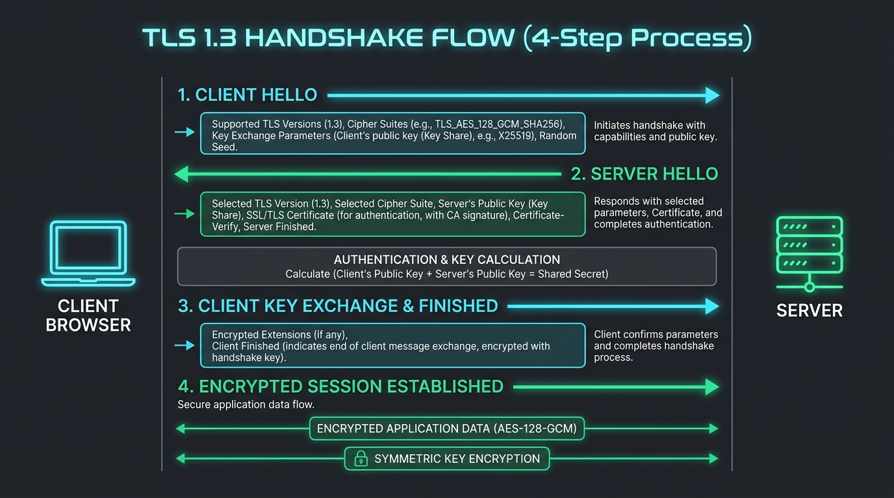
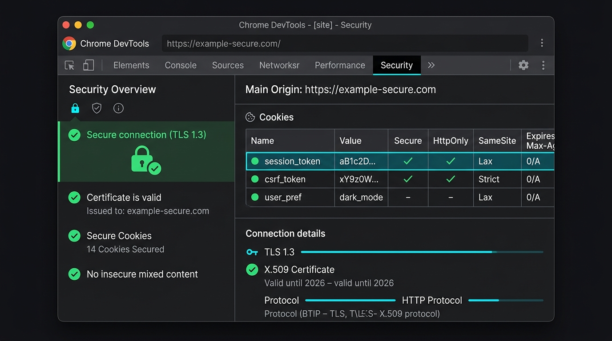

Modern web applications rely heavily on maintaining state, managing sessions securely, and encrypting data in transit. As a Software Engineer, Web Developer, or Systems Architect, understanding the distinction between Cookies, Web Storage APIs, and TLS protocols is foundational to building secure web applications.
Figure 1: Real Chrome DevTools storage inspection: production cookie flags protecting auth sessions vs client-side LocalStorage.
1. Deep Dive into Browser Cookies & Security Flags
Cookies were invented in 1994 by Lou Montulli to solve a fundamental property of the HTTP protocol: HTTP is stateless. Without cookies, a web server would forget who you are immediately after responding to your request.
A cookie is a small key-value pair stored by the browser. Whenever a user makes an HTTP request to a server, the browser automatically inspects its cookie store and appends all matching cookies in the request header:
// Browser HTTP Request Header
GET /api/user/profile HTTP/1.1
Host: api.example.com
Cookie: session_id=abc123xyz; theme=dark; tracking_id=98765
Cookie Security Attributes Explained
Setting raw cookies without security flags exposes your application to severe vulnerabilities like Cross-Site Scripting (XSS) and Cross-Site Request Forgery (CSRF). Server responses should always configure flags appropriately in the Set-Cookie header:
// Secure Server Response Header Example
Set-Cookie: session_token=e9a18f2d; Path=/; Domain=.example.com; Secure; HttpOnly; SameSite=Strict; Max-Age=86400;
HttpOnly: Prevents client-side scripts (JavaScript) from reading the cookie viadocument.cookie. This is the single most important line of defense against session hijacking via XSS.Secure: Instructs the browser to send the cookie ONLY over encryptedhttps://connections. Never transmitted over plainhttp://.SameSite: Controls whether cookies are sent with cross-site requests.SameSite=Strict: Cookie is never sent in cross-site requests (e.g., following a link from an external site). Provides maximum protection against CSRF.SameSite=Lax: Sent when navigating to the origin site via top-level GET requests (e.g. clicking a link). Default in modern browsers.SameSite=None: Sent on all cross-site requests (Requires theSecureflag).
Max-Age/Expires: Defines the lifespan of the cookie. If omitted, the cookie becomes a Session Cookie and is deleted when the browser closes.
2. Web Storage APIs: Local Storage & Session Storage
Introduced in HTML5, the Web Storage API provides a mechanism to store key-value data directly in the client browser without sending it back and forth to the server on every HTTP request.
LocalStorage
Data stored in localStorage persists indefinitely until explicitly cleared by the user or client-side JavaScript.
// LocalStorage API Usage
localStorage.setItem('userTheme', 'dark');
const theme = localStorage.getItem('userTheme');
localStorage.removeItem('userTheme');
SessionStorage & Cross-Tab Isolation
sessionStorage maintains a separate storage area for each given origin that is available for the duration of the page session (as long as the tab is open).
You can listen for storage changes across tabs using the window.onstorage event listener:
// Listen for state changes in other browser tabs
window.addEventListener('storage', (event) => {
console.log(`Key changed: ${event.key}`);
console.log(`Old value: ${event.oldValue}`);
console.log(`New value: ${event.newValue}`);
});
3. Storage Comparison Matrix & IndexedDB
| Feature | Cookies 🍪 | Local Storage 💾 | Session Storage 🗂️ | IndexedDB 🗄️ |
|---|---|---|---|---|
| Capacity | ~4 KB | ~5 - 10 MB | ~5 MB | > 250 MB (Varies) |
| Lifetime | Explicit Expiry | Permanent | Tab Session | Permanent |
| Request Payload | Sent Automatically | Not Sent | Not Sent | Not Sent |
| XSS Protection | Yes (if HttpOnly) |
No (Vulnerable) | No (Vulnerable) | No (Vulnerable) |
| Data Structure | String Key-Value | String Key-Value | String Key-Value | NoSQL Object Store |
4. HTTP vs. HTTPS & The TLS 1.3 Handshake
Understanding transportation encryption is essential for network testing. HTTP operates in plain text over port 80, whereas HTTPS wraps HTTP traffic inside a TLS (Transport Layer Security) tunnel over port 443.

Figure 2: The 4-step TLS 1.3 cryptographic handshake process.
The 4-Step TLS 1.3 Handshake Execution
- Client Hello: The browser sends supported TLS versions, cipher suites, and a random client key share.
- Server Hello & Certificate: The server selects the cipher suite, sends its digital SSL certificate containing its Public Key, and sends its server key share.
- Authentication & Key Generation: The browser validates the certificate against trusted Certificate Authorities (CAs). Both parties compute the shared secret session key using Diffie-Hellman algorithm.
- Finished & Encrypted Session: Both sides exchange encrypted finished messages. All future HTTP traffic is encrypted symmetrically.
5. Automated Testing with Playwright & Modern Frameworks
Modern development and testing frameworks allow you to easily inspect, inject, and validate cookies and web storage during automated pipeline runs.
Playwright (JavaScript/TypeScript) Cookie & Storage Assertion
// Playwright Test Example: Cookie & LocalStorage Validation
import { test, expect } from '@playwright/test';
test('Verify session cookie has HttpOnly & Secure flags', async ({ page, context }) => {
await page.goto('https://example.com/login');
await page.fill('#username', 'testuser');
await page.fill('#password', 'SecretPass123!');
await page.click('#login-btn');
// Inspect Browser Cookies
const cookies = await context.cookies();
const sessionCookie = cookies.find(c => c.name === 'session_token');
expect(sessionCookie).toBeDefined();
expect(sessionCookie.httpOnly).toBe(true);
expect(sessionCookie.secure).toBe(true);
expect(sessionCookie.sameSite).toBe('Strict');
// Validate LocalStorage does NOT contain raw passwords
const localStorageData = await page.evaluate(() => JSON.stringify(window.localStorage));
expect(localStorageData).not.toContain('SecretPass123!');
});
6. Master 10-Point Web Security Audit Checklist

Figure 3: Chrome DevTools security tabs and cookie attribute inspection.
- HttpOnly Cookie Flag: Are session identifiers protected against JavaScript access?
- Secure Cookie Flag: Are cookies restricted strictly to HTTPS channels?
- SameSite Policy: Are cookies configured with
SameSite=LaxorStrict? - Plain-Text Tokens in LocalStorage: Is sensitive PII or raw auth tokens stored in
localStorage? - HSTS Header: Does the server include
Strict-Transport-Security: max-age=31536000; includeSubDomains? - SSL Certificate Expiry: Is the TLS certificate issued by a trusted root CA and not expiring within 30 days?
- HTTP to HTTPS Redirection: Does unencrypted
http://traffic return a301 Redirecttohttps://? - CORS Policy: Are
Access-Control-Allow-Originheaders restricted rather than wildcard*for authenticated endpoints? - Content-Security-Policy (CSP): Is a robust CSP header configured to mitigate inline script injection?
- Session Termination: Does logging out invalidate the cookie on the server side as well as clearing browser storage?
💬 Community Discussion
What security testing practices do you use in your team? What technical topic should we cover in Gyaan Ki Baat #2?
Join the conversation on LinkedIn!